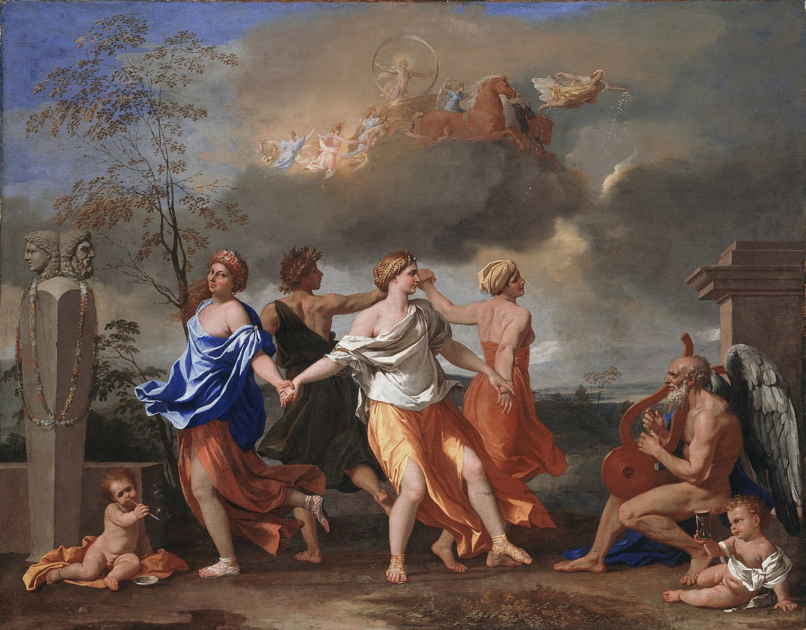

The Lyre of Hephaestus
AI, art, language, and what makes us truly what we are.
![]()
I have probably spent more time looking at Poussin’s Dance to the Music of Time than any other work of art. Sneaking off to the Wallace Collection in London and just looking at the Dance was my comfort activity while living in London – a time that was not exactly devoid of its trials. It’s not, by any measure, great art, insofar as such judgments can be made with any objectivity. Like most French Baroque allegorical paintings, it’s considered somewhat ‘boring’. It neither has, nor claims to arrogate to itself, the fiery passion of a Van Gogh, the compositional genius of a Vermeer or the turbulence of a Turner. It’s not particularly well known, and indeed more know it for having lent its name to Anthony Powell’s dodecalogy (quite incidentally, another of my favourite works of art). In as far as there can be a sensible debate as to what is, and isn’t, ‘good’ or ‘great’ art, few would consider Dance to fall into that category. What nobody would argue, however, is that it is a piece of art.

What, then, if I gave a somewhat clumsy description of the scene to Stable Diffusion, the currently fashionable model of generating images? Let’s try this:
A painting, in the French Baroque style, of four female figures, allegories of the four seasons. They hold each other by the hand, dancing in a circle. Time, represented by an old man, plays a lyre. The scene is set in the early morning.
Here’s what I got:
It’s not great by any stretch of the word. The faces, like in most diffusion models, are a mess. None of the figures get the allegory of time and seasons (of the year, but also of life, and of stations of an individual’s life). Certainly some more/better prompting could have gotten a slightly better result, but that’s really not the point.
The point is that it’s not art not because it’s not ‘good enough’ to be art, but because it is fundamentally, qualitatively different.
One art, please
At this point, we need to introduce a key concept to the argument to follow, namely that of a simulacrum. For the purposes of this argument, I shall define a simulacrum as follows: something that resembles the product of an intrinsically human activity but which can be obtained without that activity, including by non-human actors, such as non-human animals or, as it may be, artificial intelligences.
At the heart of the notion of a simulacrum is that the product and the process are different things. Art is not a product, but a process. I am, as I will explain later, not singling out art in some romantic exaltation of the artistic as quintessentially human, nor am I limiting art to what one might find in a museum. When I discuss art, I fully intend to include a toddler’s finger painting and even some absent-minded doodles on the margins of a less-than-gripping journal article.1 There are other activities that may become the subject matter of a simulacrum, language being perhaps of foremost interest (on which, once again, see infra). And just as Zoidberg can’t buy ‘art’, merely a ‘work of art’ (‘work’ here having the meaning of ‘product’ – an ‘artwork’ or ‘work of art’ being not something with ‘art characteristics’ but rather the result of the activity we know as ‘art’), an artificial intelligence or a non-human animal cannot create ‘art’, either.
1 Because who of us hasn’t been bored enough by a dull paper to start doodling?
At the heart of this is the difference between, of course, the process and the product. Artificial intelligence generally works according to a very simple inductive principle: given a bunch of examples (such as pairs of images and descriptions of images), learn the parameters of a function \(f(d) = I\) so that for any arbitrary description \(d\), an image \(I\) is generated so as to minimise a loss function \(\sum_{i=0}^N J(d_i, I_i)\) over the \(N\)-sized training set. \(f(d)\) may be quite complex indeed, and \(J(d, I)\) may comprise various steps up to and including human input (reinforcement learning with human feedback – RLFH for short –, which is how most of the LLMs currently in vogue were trained, include this step quite prominently), but in the end, it’s all about learning \(f\). For a neural network, for instance, this ‘learning’ takes place by way of an algorithm called backpropagation, which changes the values of weights and bias matrices that form part of \(f\) so as to minimise \(J\). Regardless of how \(f\) is learned, what is at the heart of the entire process is learning a function that simulates the outcome. Stable Diffusion, for instance, is not concerned with simulating the process of creating art, it is concerned with simulating the outcome of creating art.
Human processes
That matters, because not everything is about outcomes. In fact, as humans, we recognise that some of the most important things aren’t. Consider moral judgment, the individual and societal assignment of a moral character to human actions. Yes, outcomes do matter, but they aren’t the be-all end-all of moral judgment. We differentiate between murder, manslaughter, reckless homicide, excusable homicide and justifiable homicide, even though the end result is the same (i.e. someone is dead), because we acknowledge that different levels of moral agency, and different forms of its exercise, are at play in each of these. We do so because we recognise humans are more than mere outcome generating machines: how (and why) something came to be is often just as important, if not more so, than what the end result is.
This is a uniquely human differentiation. In the same vein, then, there are things that only humans are capable of. A machine can certainly take a life, but it cannot commit murder, because the latter is defined not just by an outcome but also the mental state (mens rea) that led up to it. We think of Xerxes flogging the sea as the act of a megalomaniacal despot who has taken leave of his senses precisely because we recognise that punishing the sea, incapable of moral responsibility for its stormy waves washing away Xerxes’s pontoon bridges, as preposterous. Punishment requires, if not guilt, at least a subject capable of being guilty. Punishing the innocent is unjust, but punishing something incapable of being guilty or innocent or otherwise morally responsible is worse – it is insane.2
2 Not that otherwise quite rationalistic societies did not engage in trials of lifeless things. Walter Woodburn Hyde wrote a wonderful paper on this.
And just as moral guilt is uniquely human, so is creativity. This is not to suggest an exalted role for creativity – much as we tend to think of that term to have a positive meaning, for the purposes of this argument, creativity is any act of the mind that brings forth something. This comprises not just things like creating art, but also using language. There are many functions of language, ranging from the informative through the performative (what Searle called ‘speech acts’) to the phatic. However, humans communicating always do so with some intent. That’s different from machines using words. A machine uses words, and maybe uses language, but it does not ‘speak’, for that requires an intent, something no machine, howsoever sophisticated, can create. Like art, speech is not just about what, but the why, of an action. There are many reasons my neighbour greets me with “hey, how’re you doing?” – maybe it’s genuine interest in how I am doing, maybe it is as a kind of social bond-strengthening (phatic communication), but it is backed by some sort of intent that goes beyond just wanting to produce words.
The tune without the music
A simulacrum, then, is what’s left when the uniquely human process is removed, and only the outcome remains, obtained through a different process (e.g. inference from a model generated by way of minimising the loss function over a training set). It is the tune without the music. A simulacrum doesn’t necessarily have to be ‘worse’ than the real deal – quite likely, Stable Diffusion can produce a better drawing than I could, and GPT-4 might well write a better poem than my hamfisted attempts at poetry. However, neither of those are the real thing. Stable Diffusion will be able to do better drawings than I do, but it won’t ever be able to do better art, because it’ll never be able to do art.
In that sense, it’s the opposite of ‘going through the motions’: a simulacrum is an often indistinguishable in its end product from the ‘real thing’, but arrives there by a different route. This is, indeed, why it is so deceptively similar to the ‘real thing’, and what gives rise to perhaps its darker side. In a recent interview on one of my favourite podcasts, Machine Learning Street Talk, Daniel Dennett referred to the simulacrum of human communicational interaction as “counterfeit people”. I disagree with some of Dennett’s position, but this is worth watching in its entirety:
I think Dennett is wrong on a few points,3 but the language of ‘counterfeits’ gets some of this point across quite well. A counterfeit currency isn’t really all that different from an authentic bank note. What is different is the intent by which it is created. The counterfeit lacks the moral intent that it be honoured in return (that’s why people forge currency – there would be little point in counterfeiting bank notes if one actually intended to honour them!).4
3 Importantly, I think he’s falling victim to the trap he so clearly identifies. The lack of moral agency of AI, which would make these pretend-humans something other than ‘real’ is exactly why the semantics of ‘counterfeiting’, which involves deception, an act of quintessential moral agency, is altogether inappropriate. But that’s for another day.
4 Arguably, all modern fiat currency is at least a little fake, but that is also another argument for another day.
The heart of the matter
In the end, outcomes are not all that make us who we are. The poet, the artist, the murderer and the thief – they are who and what they are not solely because of outcomes, but because of what led up to those outcomes. And that’s ultimately the most human thing any of us will ever get to experience: to be someone not because of an outcome that a machine or an algorithm could feasibly mimic, but because of the quintessentially human process of decisions, good or bad, actions, passion, foibles. The things that make us who we are are in turn a product of who we are.
And that’s what gives meaning to those outcomes, meaning that a machine-generated limerick could never aspire to – not because it is not ‘good enough’, but because it is just a qualitatively different thing. It is, to use Pauli’s turn of phrase, not that the Stable Diffusion-generated painting in Figure 1 is ‘not right’ (or aesthetically pleasing, in this case) – it’s that it’s ‘not even wrong’. It lacks the aptitude of being good or bad art, no matter how good or bad (likely the latter) it would be if it didn’t. It could, in theory, be good enough to put Poussin to shame, and it would still be no closer to being art. It could be Turner Prize-winning work,5 and yet be put to shame by a toddler’s finger-painting.
5 Let’s, for the time being, entertain the notion that that still means something.
A world in which the poet and the machine are on equal footing is a world that, for all intents and purposes, does not have poets anymore. It is a world in which outcomes determine everything, and that makes it a world that is not worth inhabiting: for a world of outcomes alone is a world in which our choices, our actions, our most irreplicably human strengths and weaknesses alike play no role.
But that is not the world we inhabit – thankfully. We – still? – live in a world in which the way we arrive at something, be it a poem or a painting or a dead body, matters. And as long as that is so, the simulacra of human action will remain inhabiting a different world of their own. They may reach a kind of technical verisimilitude, but not a moral verisimilitude.
And that is what makes all the difference.
Citation
@misc{csefalvay2023,
author = {{Chris von Csefalvay}},
title = {The {Lyre} of {Hephaestus}},
date = {2023-10-16},
url = {https://chrisvoncsefalvay.com/posts/lyre-of-hephaestus/},
doi = {10.59350/pd0q6-r5n60},
langid = {en-GB}
}